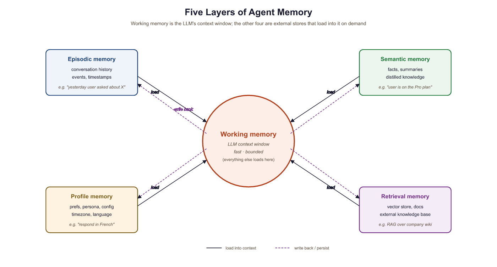

"Short-term memory is cheap. Long-term memory is valuable. Knowing the difference is wisdom."
KV, Carefully Curated AI Agent
Memory is what separates a stateless chatbot from a capable agent. Without memory, every interaction starts from scratch. The agent cannot learn from past mistakes, recall user preferences, or build on previous work. But memory is not a single thing. It is a layered system where each layer serves a different purpose, operates at a different timescale, and requires different storage and retrieval strategies. This section presents a complete memory architecture with five distinct layers, explicit policies for what to write and when to forget, and practical implementations you can deploy immediately. The goal is to give your agents the ability to remember what matters while forgetting what does not.
Prerequisites
This section builds on the memory overview in Section 20.1 and the MemGPT/Mem0 systems discussed in Section 20.6. You should be familiar with embeddings and vector databases from Chapter 17 and retrieval-augmented generation from Section 18.1. Understanding of conversation management from Chapter 17 will also be helpful. The agent system architecture from Section 20.6 provides the deployment context for the memory manager component designed here.
20.6.1 Memory Taxonomy: Five Layers
Agent memory can be organized into five distinct layers, each analogous to a component of human cognition. Understanding these layers and their boundaries is the first step toward designing an effective memory system.
Working Memory (Context Window)
Working memory is the LLM's context window: the system prompt, conversation history, tool call results, and reasoning traces from the current session. It is fast (zero retrieval latency), high-fidelity (the model sees every token), and bounded (typically 128K to 200K tokens for current models). Working memory is the only layer the model can access directly. All other layers must be loaded into working memory before the model can use them.
Episodic Memory (Conversation History)
Episodic memory stores records of past interactions: previous conversations, completed tasks, and their outcomes. Each episode is a structured record containing the user's request, the agent's actions, the final result, and metadata such as timestamps and success indicators. Episodic memory enables the agent to answer questions like "What did we discuss last Tuesday?" or "How did I solve this problem before?"
Semantic Memory (Facts and Knowledge)
Semantic memory stores factual knowledge that is not tied to a specific interaction. This includes domain knowledge, learned procedures, company policies, and reference information. Semantic memories are typically stored as embeddings in a vector database and retrieved via similarity search, making this layer a specialized form of RAG (Section 18.1). The key difference from general RAG is that semantic memories are curated by the agent itself, not just ingested from external documents.
Profile Memory (User Preferences)
Profile memory stores persistent information about the user: their name, preferences, communication style, timezone, role, and any other attributes that remain stable across sessions. Unlike episodic memory (which records what happened), profile memory records who the user is. This layer is typically stored as structured key-value pairs rather than as embeddings, because the data is small and lookups are by exact key.
Retrieval Memory (Vector Store)
Retrieval memory is the general-purpose vector store that supports similarity search across all stored content. While semantic memory is a conceptual category, retrieval memory is the implementation layer. It handles embedding generation, index management, and nearest-neighbor search. In practice, episodic and semantic memories are often stored in the same vector database with different metadata tags that allow the retrieval layer to filter by memory type.
The five-layer taxonomy maps directly to human cognitive science. Working memory corresponds to the cognitive psychology concept of the same name (limited capacity, immediate access). Episodic memory mirrors autobiographical memory. Semantic memory parallels general world knowledge. Profile memory maps to self-knowledge. This is not just an analogy: the same design trade-offs apply. Humans forget irrelevant details (forgetting policies), consolidate important experiences into general knowledge (summarization), and quickly access frequently used information (recency weighting).

20.6.2 Storage Design
Each memory layer has different storage requirements. Choosing the right storage backend depends on the layer's access pattern, data volume, and persistence needs. The following table summarizes the recommended backends for each layer.
| Memory Layer | Data Shape | Recommended Storage | Access Pattern |
|---|---|---|---|
| Working | Token sequence | In-memory (LLM context) | Direct, every call |
| Episodic | Structured records + embeddings | PostgreSQL with pgvector, or SQLite + FAISS | Time-range queries, similarity search |
| Semantic | Text chunks + embeddings | Vector DB (Chroma, Pinecone, Weaviate) | Similarity search |
| Profile | Key-value pairs | Redis, PostgreSQL, or SQLite | Exact key lookup |
| Retrieval | Embeddings + metadata | Dedicated vector DB or pgvector | Approximate nearest neighbor |
For prototyping and small-scale deployments, SQLite with a lightweight embedding library provides a single-file solution that requires no external services. For production systems handling multiple concurrent users, PostgreSQL with the pgvector extension offers the best balance of relational queries (for episodic and profile data) and vector search (for semantic and retrieval data) in a single database.
The following code implements a storage abstraction that supports multiple backends. This interface is used by all subsequent memory components.
from abc import ABC, abstractmethod
from dataclasses import dataclass, field
from datetime import datetime, timezone
from typing import Any
@dataclass
class MemoryRecord:
"""A single memory entry across any layer."""
record_id: str
layer: str # "episodic", "semantic", "profile"
content: str
metadata: dict[str, Any] = field(default_factory=dict)
embedding: list[float] | None = None
created_at: datetime = field(
default_factory=lambda: datetime.now(timezone.utc)
)
importance: float = 0.5 # 0.0 to 1.0
access_count: int = 0
last_accessed: datetime | None = None
class MemoryStore(ABC):
"""Abstract interface for memory storage backends."""
@abstractmethod
async def write(self, record: MemoryRecord) -> None: ...
@abstractmethod
async def read_by_id(self, record_id: str) -> MemoryRecord | None: ...
@abstractmethod
async def search_similar(
self, embedding: list[float], layer: str,
top_k: int = 5,
) -> list[MemoryRecord]: ...
@abstractmethod
async def search_by_metadata(
self, layer: str, filters: dict[str, Any],
) -> list[MemoryRecord]: ...
@abstractmethod
async def delete(self, record_id: str) -> None: ...
@abstractmethod
async def delete_by_filter(
self, layer: str, filters: dict[str, Any],
) -> int: ...20.6.3 Write Policies: What to Remember
Not every piece of information should be stored in memory. Writing indiscriminately leads to bloated storage, slow retrieval, and irrelevant results polluting the context window. A write policy defines three things: what to store, when to store it, and how to process it before storage.
What to Store
The agent should store information that is (a) likely to be useful in future interactions, (b) not already present in its knowledge base, and (c) not trivially re-derivable. User preferences, task outcomes, learned facts, and corrected errors are high-value write targets. Routine acknowledgments ("OK, I'll do that"), intermediate reasoning steps, and verbose tool outputs are low-value and should be summarized or discarded.
When to Store
Memory writes can be triggered at three points: (1) at the end of each conversation turn (for episodic summaries), (2) when the agent explicitly decides to remember something (for semantic facts), and (3) when user profile information changes (for profile updates). Deferred writing, where the agent batches memories and writes them at session end, reduces latency during the conversation.
Deduplication and Summarization
Before writing, the agent should check whether a similar memory already exists. If the new information overlaps with an existing memory, the existing record should be updated rather than duplicated. For episodic memories, long conversations should be summarized before storage. A conversation that spans 50 turns can typically be compressed into a 3-to-5 sentence summary without losing the essential information.
Show 90 lines of code
from openai import AsyncOpenAI
import hashlib
class WritePolicy:
"""Decides what to write, deduplicates, and summarizes."""
def __init__(
self, client: AsyncOpenAI, store: MemoryStore,
similarity_threshold: float = 0.92,
):
self.client = client
self.store = store
self.threshold = similarity_threshold
async def _get_embedding(self, text: str) -> list[float]:
response = await self.client.embeddings.create(
model="text-embedding-3-small", input=text
)
return response.data[0].embedding
async def _summarize(self, text: str) -> str:
response = await self.client.chat.completions.create(
model="gpt-4o-mini",
messages=[
{"role": "system", "content": (
"Summarize the following interaction in 2 to 4 "
"sentences. Focus on decisions, outcomes, and "
"user preferences. Omit greetings and filler."
)},
{"role": "user", "content": text},
],
temperature=0.0,
max_tokens=200,
)
return response.choices[0].message.content
def _compute_importance(self, content: str, layer: str) -> float:
"""Heuristic importance scoring."""
score = 0.5
# Preferences and corrections are high-importance
if any(kw in content.lower() for kw in [
"prefer", "always", "never", "correct", "fix", "error"
]):
score += 0.2
# Profile data is always important
if layer == "profile":
score = 0.9
return min(score, 1.0)
async def should_write(
self, content: str, layer: str,
) -> tuple[bool, MemoryRecord | None]:
"""Check for duplicates; return (should_write, existing_record)."""
embedding = await self._get_embedding(content)
similar = await self.store.search_similar(
embedding, layer, top_k=1
)
if similar and self._cosine_sim(
embedding, similar[0].embedding
) > self.threshold:
return False, similar[0]
return True, None
async def prepare_and_write(
self, content: str, layer: str,
metadata: dict | None = None,
) -> MemoryRecord | None:
# Summarize long content
if len(content) > 2000:
content = await self._summarize(content)
should_write, existing = await self.should_write(content, layer)
if not should_write:
# Update access count on existing record
existing.access_count += 1
await self.store.write(existing)
return existing
embedding = await self._get_embedding(content)
record = MemoryRecord(
record_id=hashlib.sha256(
content.encode()
).hexdigest()[:16],
layer=layer,
content=content,
metadata=metadata or {},
embedding=embedding,
importance=self._compute_importance(content, layer),
)
await self.store.write(record)
return record
@staticmethod
def _cosine_sim(a: list[float], b: list[float]) -> float:
dot = sum(x * y for x, y in zip(a, b))
norm_a = sum(x * x for x in a) ** 0.5
norm_b = sum(x * x for x in b) ** 0.5
if norm_a == 0 or norm_b == 0:
return 0.0
return dot / (norm_a * norm_b)
20.6.4 Read Policies: What to Retrieve
Retrieving the right memories is as important as storing the right information. A read policy determines which memories to load into the working context for a given query. Loading too many memories wastes context window tokens and can confuse the model. Loading too few leaves the agent without critical information. The read policy must balance four scoring dimensions.
Relevance Scoring
Relevance is measured by the cosine similarity between the query embedding and each memory's embedding. This is the primary ranking signal for semantic and episodic memories. However, raw cosine similarity alone is insufficient because it ignores temporal context and memory importance.
Recency Weighting
Recent memories are often more relevant than older ones, even if the older memory has a higher similarity score. Recency weighting applies an exponential decay to the relevance score based on the time since the memory was created or last accessed. The decay rate is a tunable parameter: fast-moving domains (customer support) need aggressive decay, while stable domains (legal research) need minimal decay.
Importance Ranking
Each memory carries an importance score assigned at write time and potentially updated over time. High-importance memories (user corrections, critical preferences) should surface even when their embedding similarity is moderate. The final retrieval score combines relevance, recency, and importance with configurable weights.
Context Window Budgeting
The read policy must respect the working memory budget. If the model's context window is 128K tokens and the system prompt consumes 4K, the current conversation consumes 20K, and tool schemas consume 6K, the memory budget is roughly 98K tokens. In practice, you should allocate only a fraction of the available space (typically 10 to 20%) for retrieved memories, leaving room for the model's response and any tool call results.
import math
from datetime import datetime, timezone
class ReadPolicy:
"""Retrieves memories using composite relevance scoring."""
def __init__(
self,
store: MemoryStore,
client: AsyncOpenAI,
relevance_weight: float = 0.5,
recency_weight: float = 0.3,
importance_weight: float = 0.2,
recency_half_life_hours: float = 72.0,
max_memory_tokens: int = 4000,
):
self.store = store
self.client = client
self.w_rel = relevance_weight
self.w_rec = recency_weight
self.w_imp = importance_weight
self.half_life = recency_half_life_hours
self.max_tokens = max_memory_tokens
async def _get_embedding(self, text: str) -> list[float]:
response = await self.client.embeddings.create(
model="text-embedding-3-small", input=text
)
return response.data[0].embedding
def _recency_score(self, created_at: datetime) -> float:
"""Exponential decay based on age in hours."""
now = datetime.now(timezone.utc)
age_hours = (now - created_at).total_seconds() / 3600
return math.exp(-0.693 * age_hours / self.half_life)
def _composite_score(
self, similarity: float, record: MemoryRecord,
) -> float:
recency = self._recency_score(record.created_at)
return (
self.w_rel * similarity
+ self.w_rec * recency
+ self.w_imp * record.importance
)
def _estimate_tokens(self, text: str) -> int:
"""Rough token estimate: ~4 characters per token."""
return len(text) // 4
async def retrieve(
self, query: str, layers: list[str] | None = None,
top_k: int = 10,
) -> list[MemoryRecord]:
"""Retrieve top memories within token budget."""
embedding = await self._get_embedding(query)
target_layers = layers or ["episodic", "semantic", "profile"]
all_candidates = []
for layer in target_layers:
results = await self.store.search_similar(
embedding, layer, top_k=top_k
)
for record in results:
sim = WritePolicy._cosine_sim(embedding, record.embedding)
score = self._composite_score(sim, record)
all_candidates.append((score, record))
# Sort by composite score descending
all_candidates.sort(key=lambda x: x[0], reverse=True)
# Apply token budget
selected = []
token_count = 0
for score, record in all_candidates:
tokens = self._estimate_tokens(record.content)
if token_count + tokens > self.max_tokens:
continue
selected.append(record)
token_count += tokens
# Update access metadata
record.access_count += 1
record.last_accessed = datetime.now(timezone.utc)
await self.store.write(record)
return selected
Start with equal weights for relevance, recency, and importance (0.33 each), then tune based on your application. Customer support agents benefit from higher recency weight (0.4) because recent interactions are almost always relevant. Research agents benefit from higher relevance weight (0.6) because the best answer might come from a conversation weeks ago. Log the composite scores alongside retrieval results so you can analyze which memories the agent is actually using.
20.6.5 Forgetting: TTL, Decay, and Explicit Deletion
A memory system that never forgets eventually drowns in stale, irrelevant data. Forgetting is not a failure; it is a feature. Forgetting policies keep the memory store lean, retrieval fast, and results relevant. There are four forgetting mechanisms, each appropriate for different situations.
TTL-Based Expiry
Each memory record can carry a time-to-live (TTL) value. After the TTL expires, the record is eligible for deletion. This is appropriate for inherently time-bounded information: session context, temporary instructions, and transient data. A background cleanup process periodically scans for and deletes expired records.
Importance Decay
Memories that are never accessed gradually lose importance. On each cleanup cycle, the forgetting policy reduces the importance score of records that have not been accessed recently. When a record's importance drops below a threshold (for example, 0.1), it is deleted. Memories that are accessed frequently maintain their importance through the access count mechanism.
Explicit Deletion
Users or administrators may explicitly request that specific memories be deleted. This is essential for compliance with privacy regulations and for correcting agent errors. The agent should expose a "forget this" command that deletes memories matching a user's description.
Privacy-Driven Purging
When a user exercises their right to be forgotten (under GDPR, CCPA, or similar regulations), all memories associated with that user must be permanently and completely deleted. This requires that every memory record is tagged with the originating user ID so that user-scoped deletion is possible.
from datetime import timedelta
class ForgettingPolicy:
"""Manages memory cleanup through TTL, decay, and purging."""
def __init__(
self,
store: MemoryStore,
default_ttl_days: dict[str, int] | None = None,
importance_decay_rate: float = 0.05,
min_importance: float = 0.1,
):
self.store = store
self.ttl_days = default_ttl_days or {
"episodic": 90,
"semantic": 365,
"profile": 730, # 2 years
}
self.decay_rate = importance_decay_rate
self.min_importance = min_importance
async def cleanup_expired(self) -> int:
"""Delete records past their TTL. Returns count deleted."""
total_deleted = 0
now = datetime.now(timezone.utc)
for layer, ttl_days in self.ttl_days.items():
cutoff = now - timedelta(days=ttl_days)
deleted = await self.store.delete_by_filter(
layer, {"created_before": cutoff.isoformat()}
)
total_deleted += deleted
return total_deleted
async def apply_decay(
self, records: list[MemoryRecord],
) -> list[str]:
"""Decay importance of unaccessed records.
Returns IDs of deleted records."""
deleted_ids = []
now = datetime.now(timezone.utc)
for record in records:
if record.last_accessed is None:
age_days = (now - record.created_at).days
else:
age_days = (now - record.last_accessed).days
if age_days > 7: # Only decay after one week of no access
record.importance -= self.decay_rate
if record.importance < self.min_importance:
await self.store.delete(record.record_id)
deleted_ids.append(record.record_id)
else:
await self.store.write(record)
return deleted_ids
async def purge_user(self, user_id: str) -> int:
"""GDPR right-to-forget: delete all user memories."""
total = 0
for layer in ["episodic", "semantic", "profile"]:
deleted = await self.store.delete_by_filter(
layer, {"user_id": user_id}
)
total += deleted
return totalUser purging must be thorough. If memories reference other users' data (for example, a shared conversation), the purge must remove the target user's content without corrupting shared records. Design your memory records with clear ownership from the start. Also verify that purging removes data from all storage layers, including vector index caches and backup systems, not just the primary database.
20.6.6 Privacy: PII Detection and Data Isolation
Before any content enters the memory store, it should pass through a PII (personally identifiable information) detection filter. The filter identifies sensitive data types (email addresses, phone numbers, social security numbers, credit card numbers) and either redacts them, encrypts them, or blocks the write entirely, depending on the configured policy.
Data isolation ensures that one user's memories are never accessible to another user. This is implemented through strict user-scoped queries: every memory read and write operation includes the user ID as a mandatory filter. In multi-tenant deployments, consider using separate database schemas or namespaces per tenant for stronger isolation guarantees.
import re
class PIIFilter:
"""Detects and redacts PII before memory storage."""
PATTERNS = {
"email": re.compile(
r"\b[A-Za-z0-9._%+-]+@[A-Za-z0-9.-]+\.[A-Z|a-z]{2,}\b"
),
"phone_us": re.compile(
r"\b(\+?1[-.\s]?)?\(?\d{3}\)?[-.\s]?\d{3}[-.\s]?\d{4}\b"
),
"ssn": re.compile(r"\b\d{3}-\d{2}-\d{4}\b"),
"credit_card": re.compile(r"\b\d{4}[-\s]?\d{4}[-\s]?\d{4}[-\s]?\d{4}\b"),
}
def __init__(self, policy: str = "redact"):
"""policy: 'redact', 'block', or 'allow'"""
self.policy = policy
def scan(self, text: str) -> dict[str, list[str]]:
"""Return detected PII types and their matches."""
found = {}
for pii_type, pattern in self.PATTERNS.items():
matches = pattern.findall(text)
if matches:
found[pii_type] = matches
return found
def process(self, text: str) -> tuple[str, bool]:
"""Apply policy to text. Returns (processed_text, was_modified)."""
detections = self.scan(text)
if not detections:
return text, False
if self.policy == "block":
raise ValueError(
f"PII detected ({', '.join(detections.keys())}). "
"Memory write blocked by policy."
)
if self.policy == "redact":
processed = text
for pii_type, pattern in self.PATTERNS.items():
processed = pattern.sub(
f"[REDACTED_{pii_type.upper()}]", processed
)
return processed, True
# policy == "allow"
return text, False
20.6.7 The Complete Multi-Tier Memory Manager
With all the components defined, we can now assemble the complete memory manager that the AgentSystem from Section 20.6 uses. The MemoryManager class coordinates the write policy, read policy, forgetting policy, and PII filter into a single interface with two primary methods: load_context (called before planning) and save_context (called after execution).
class MemoryManager:
"""Coordinates all memory layers for the agent system."""
def __init__(
self,
store: MemoryStore,
write_policy: WritePolicy,
read_policy: ReadPolicy,
forgetting_policy: ForgettingPolicy,
pii_filter: PIIFilter,
):
self.store = store
self.writer = write_policy
self.reader = read_policy
self.forgetter = forgetting_policy
self.pii = pii_filter
async def load_context(
self, user_id: str, session_id: str, query: str,
) -> str:
"""Load relevant memories into a context string."""
# 1. Load user profile (exact lookup)
profile_records = await self.store.search_by_metadata(
"profile", {"user_id": user_id}
)
profile_section = ""
if profile_records:
profile_lines = [r.content for r in profile_records]
profile_section = (
"## User Profile\n" + "\n".join(profile_lines)
)
# 2. Retrieve relevant episodic and semantic memories
memories = await self.reader.retrieve(
query, layers=["episodic", "semantic"], top_k=10
)
memory_section = ""
if memories:
memory_lines = [
f"- [{r.layer}] {r.content}" for r in memories
]
memory_section = (
"## Relevant Memories\n" + "\n".join(memory_lines)
)
# Combine into context string
parts = [p for p in [profile_section, memory_section] if p]
return "\n\n".join(parts) if parts else ""
async def save_context(
self, user_id: str, session_id: str,
user_message: str, plan,
):
"""Persist new memories after agent execution."""
# Build a summary of what happened
step_summaries = []
for step in plan.steps:
step_summaries.append(
f"{step.description}: {step.status.value}"
)
episode = (
f"User asked: {user_message}\n"
f"Steps: {'; '.join(step_summaries)}"
)
# PII filter before storage
filtered_episode, _ = self.pii.process(episode)
# Write episodic memory
await self.writer.prepare_and_write(
filtered_episode, "episodic",
metadata={"user_id": user_id, "session_id": session_id},
)
async def update_profile(
self, user_id: str, key: str, value: str,
):
"""Update or create a profile memory entry."""
content = f"{key}: {value}"
filtered, _ = self.pii.process(content)
await self.writer.prepare_and_write(
filtered, "profile",
metadata={"user_id": user_id, "profile_key": key},
)
async def forget_user(self, user_id: str) -> int:
"""GDPR purge: remove all memories for a user."""
return await self.forgetter.purge_user(user_id)
20.6.8 Evaluating Memory Systems
A memory system is only as good as its ability to surface the right information at the right time. Evaluating memory quality requires measuring three dimensions: recall accuracy, retrieval precision, and storage efficiency.
Recall Accuracy
Given a question that the agent should be able to answer from memory, does the memory system retrieve the relevant record? Test this by creating a benchmark of (query, expected_memory_id) pairs and measuring the hit rate. A well-tuned system should achieve 85% or higher recall on its own stored memories.
Retrieval Precision
Of the memories returned for a query, what fraction is actually relevant? Low precision means the agent's context window is being polluted with irrelevant memories, which degrades response quality. Measure precision by having evaluators rate each retrieved memory as relevant or irrelevant for the given query.
Storage Efficiency
How much storage does the memory system consume per user, and how quickly does it grow? Track the number of records per user over time, the average record size, and the deduplication rate (what percentage of writes are identified as duplicates and merged). A healthy system should show sub-linear storage growth as deduplication and summarization keep the store compact.
The most practical memory evaluation is end-to-end: does the agent perform better with memory than without? Run your agent benchmark suite twice, once with the memory system enabled and once with it disabled, and compare task success rates. If memory does not improve performance, either the write policy is storing the wrong things, the read policy is retrieving the wrong things, or the task does not benefit from memory. This A/B approach cuts through theoretical concerns and directly measures value.
Implement the MemoryStore abstract class using SQLite as the backend. Create a table with columns for record_id, layer, content, metadata (JSON), embedding (stored as a JSON array of floats), created_at, importance, access_count, and last_accessed. For search_similar, compute cosine similarity in Python after loading candidate records (this is acceptable for up to a few thousand records per user).
Answer Sketch
Use aiosqlite for async SQLite access. Create the table in __init__. For write(), use INSERT OR REPLACE keyed on record_id. For search_similar(), load all records for the given layer, deserialize their embeddings, compute cosine similarity against the query embedding, and return the top-k. For search_by_metadata(), parse the filters dict into SQL WHERE clauses on the JSON metadata column using json_extract().
Create a benchmark of 20 (query, expected_memory_content) pairs. Implement a grid search over relevance_weight, recency_weight, and importance_weight (all summing to 1.0, in increments of 0.1) to find the weight combination that maximizes recall@5 (the fraction of queries where the expected memory appears in the top 5 results). Report the best weights and the recall score.
Answer Sketch
Generate all weight triplets where each is a multiple of 0.1 and they sum to 1.0 (there are 66 such triplets). For each triplet, instantiate a ReadPolicy with those weights, run all 20 queries, and count how many return the expected memory in the top 5. The optimal weights vary by domain, but a common result is relevance=0.5, recency=0.3, importance=0.2 for general-purpose agents.
Implement an incremental conversation summarizer for episodic memory. Given a running summary and a new conversation turn, produce an updated summary that incorporates the new information. Test it on a 20-turn conversation and verify that the summary stays under 200 tokens while capturing all key decisions and outcomes.
Answer Sketch
Maintain a "running summary" string that starts empty. After each turn, prompt the LLM with: "Current summary: {summary}\nNew turn: {turn}\nProduce an updated summary in under 200 tokens that incorporates any new important information." This incremental approach avoids re-processing the entire conversation on each turn, keeping latency constant regardless of conversation length.
Your agent stores memories in a PostgreSQL database with pgvector. A user requests deletion of all their data under GDPR Article 17. Describe the complete deletion process, including: (1) which tables need to be purged, (2) how to handle embeddings that were used to train or fine-tune models, (3) how to verify that deletion is complete, and (4) what audit records you should retain (and for how long) to prove compliance.
Answer Sketch
Purge all rows in the memories table where user_id matches. Delete any vector index entries (pgvector indexes are automatically updated on row deletion). If embeddings were used for fine-tuning, the derived model weights cannot be "unlearned" trivially; document this limitation and consider retraining. Verify deletion by running a count query and a similarity search with a known memory. Retain a minimal audit record (user_id, deletion_timestamp, record_count_deleted) for 3 years to prove compliance, but do not retain any content.
- Agent memory spans five layers: working, episodic, semantic, profile, and retrieval, each serving distinct purposes.
- Memory write policies (what, when, how long) prevent unbounded growth and keep retrieval quality high.
- Working memory is the context window itself; all other layers feed into it through retrieval or summarization.
- Profile memory enables personalization across sessions without re-learning user preferences each time.
Show Answer
Working memory (current context window), episodic memory (conversation logs for multi-turn dialogue), semantic memory (facts and domain knowledge for Q&A), profile memory (user preferences for personalization), and retrieval memory (vector store for document search).
Show Answer
The key decisions are what to store (filtering noise from signal), when to store (real-time vs. batch), and how long to retain (TTL, importance-based eviction). These matter because unbounded memory growth degrades retrieval quality and increases costs.
What Comes Next
In the next section, Section 21.1: Function Calling Across Providers, we examine how benchmarks like PaperBench, CORE-Bench, and MLE-bench evaluate agents on the complex, multi-step workflows required to reproduce research papers and solve ML engineering challenges.
Memory Architecture Foundations
Pioneered the multi-tier memory architecture with memory streams, reflection, and retrieval scoring by recency, importance, and relevance. The reference implementation for agent memory systems.
Systematic survey of memory mechanisms covering memory formats, operations, and management strategies, providing the taxonomic foundation used in this section.
Implements forgetting curves and memory consolidation for LLM agents, directly applicable to the TTL and decay policies discussed in this section.
Storage and Privacy
Studies machine unlearning for LLMs, relevant to implementing explicit deletion and privacy-preserving memory management in agent systems.
Treats LLM memory management as a virtual memory system with main context and external storage, providing an OS-inspired approach to multi-tier memory management.
Demonstrates position-dependent attention patterns in long contexts, informing read policy design and memory placement strategies for effective retrieval.